Forcella Mincigòs
NUOVO
Da Povici per il vallone di Serai e il versante Ovest; discesa per la q1161 e il m. Uarchèc
La Punta Salvotis, cima misteriosa come poche, la sognavo fin dai primi giri fatti nella zona di Povici. Vista dal lato della valle del Resartico appare inaccessible: effettivamente è necessario conoscere il percorso di cacciatori descritto in Trois Neris (vedi Miniere alte del Resartico), che passa sotto la dorsale Palon dei Zábus - Punta Salvotis - Uarchèc, per poterla approcciare; noi l'abbiamo usato come via di discesa. Messa da parte nella lista delle cose da fare, in seguito sono salito sulla Punta Agarone per pale boscose dalla testata del vallone di Serai, da cui ho osservato il versante Ovest della Punta Salvotis, composto da invitanti cengioni boscosi. Una folgorazione: si va!
Partiamo al solito da Povici di Sopra; dal parcheggio si vedono bene, da sx a dx, il Palon dei Zábus con un po' di neve appena percettibile, la Punta Salvotis, la boscosa q1345 a Nord di Punta Salvotis (che abbiamo toccato), il Uarchèc.
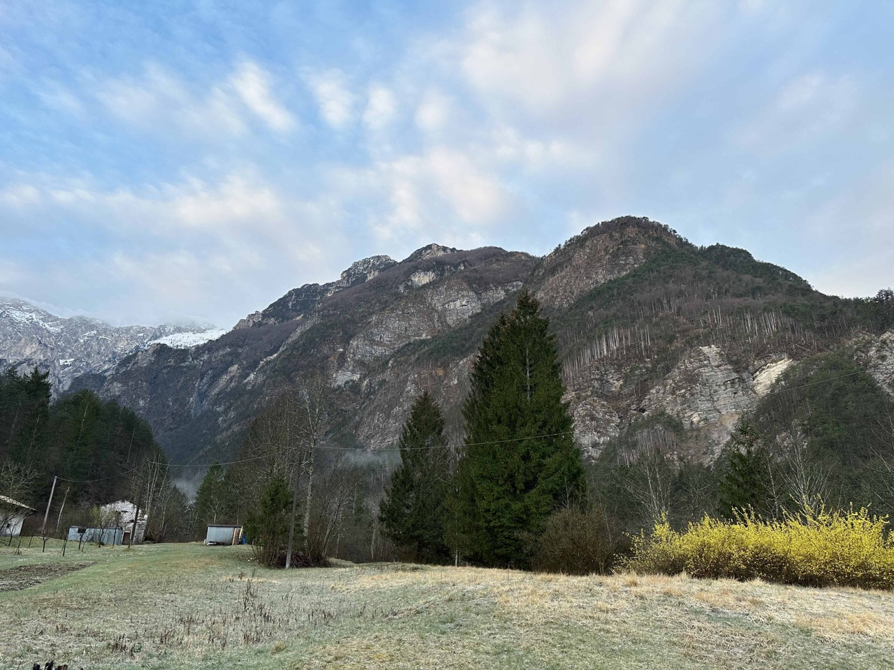 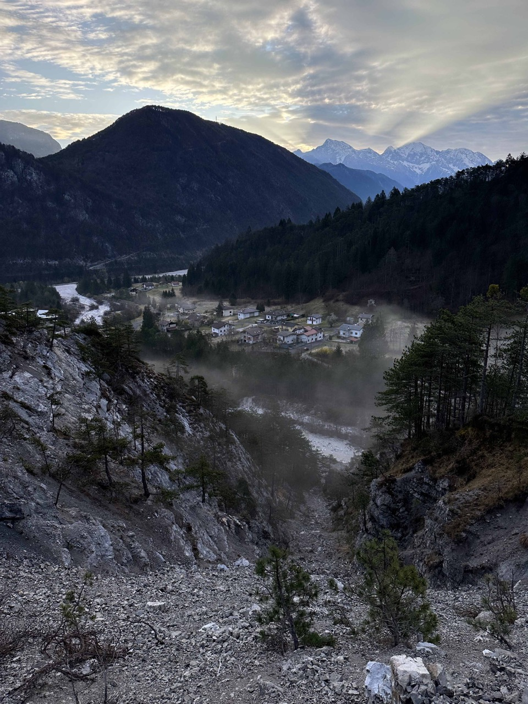Ci inoltriamo nel vallone di Serai; il bivio, peraltro evidentissimo, inizia a pochi metri dal guado, in sx orografica (cioè verso Borgo Cros).
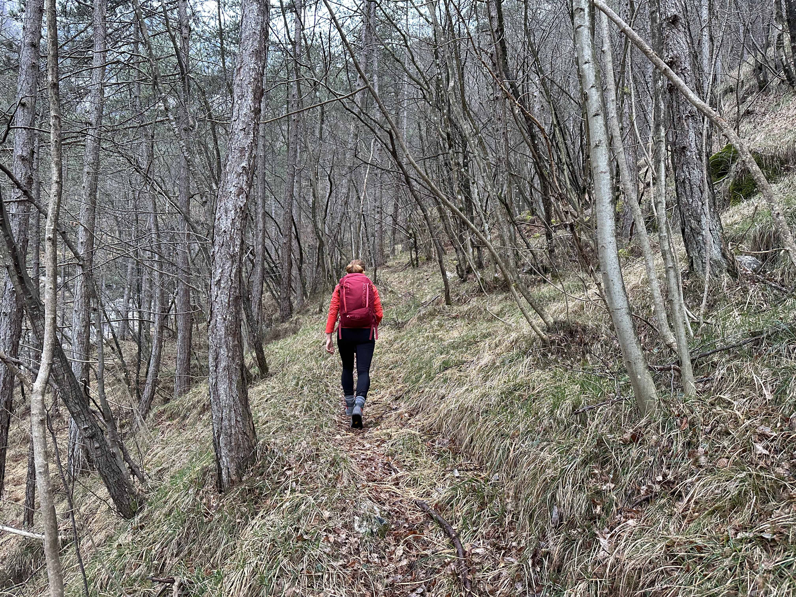Ad un certo punto si arriva ai resti di una costruzione (muretti a secco); lì la traccia si fa indistinta (schianti) e conviene salire un po', ritrovando degli omini.

Arrivati a q850 seguiamo il ramo sinistro del rio per portarci sul cengione boscoso da me scelto; l'ambiente è incredibilmente selvaggio e affascinante.
Prima o poi ci salgo su quei due spuntoni che si vedono bene nella prima foto: so già che strada fare, e ho in programma di collegarmi al Palon dei Zábus e scendere in Resartico.
Dietro di me le pale boscose percorse la settimana prima.

Saliamo ripidamente seguendo anche qualche traccia di animali.
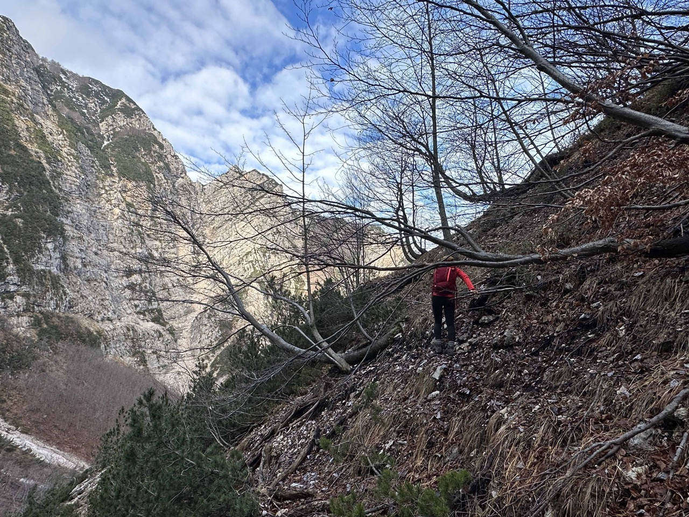Finalmente arriviamo in cresta, precisamente alla sella q1339...

...e alla q1345.
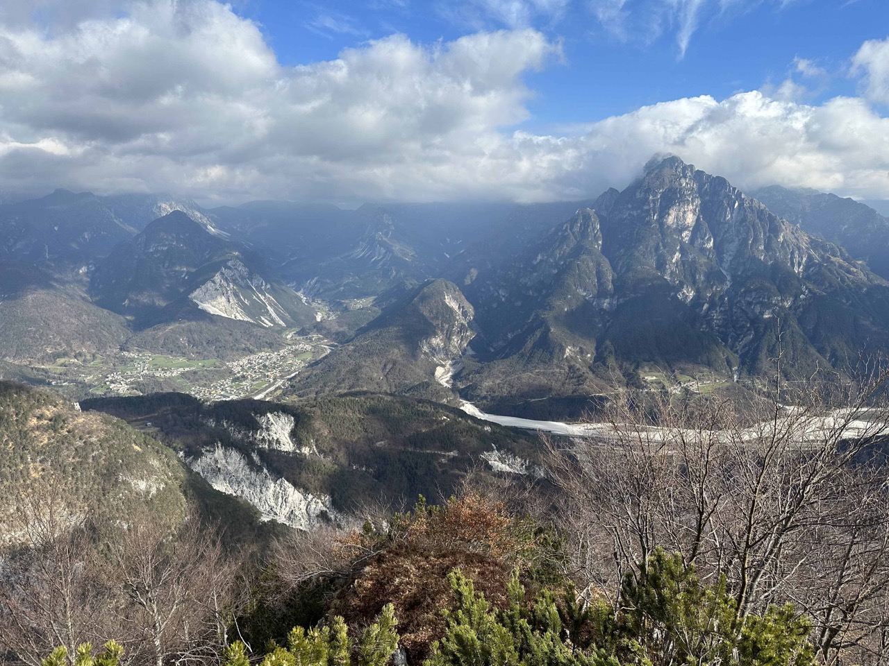L'ultimo risalto di cresta, con dietro il Palon dei Zábus.
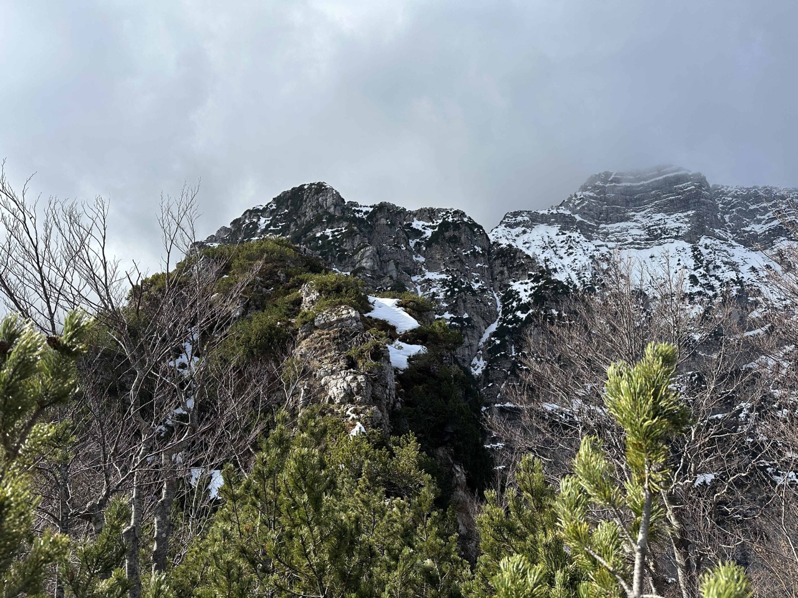In cima abbiamo costruito un bell'omino in modo che si veda dalle cime circostanti.
Il versante Nord del Palon dei Zábus ci stuzzica (però non posso mica andare sempre e solo a Povici!).
Il versante dx orografico della valle del Resartico, con i valloni dei rii Lusument (a sx) e Puntuz (a dx). Lo Spic è quell'anonimo risalto di cresta che più o meno si sovrappone al fondo della val Resia; Vetta Criuze nemmeno la si nota (è la "cima" sopra quella fascia/colata detritica nella parte alta del rio Puntuz)! Il bosco fra i due valloni è il Pusti Gost ( = bosco abbandonato), da me percorso e descritto in Trois Neris. Tutta la cresta visibile in foto è percorribile, fino a che termina la vegetazione.
Zoommata sullo Spic (a sx) e la q1264. Generalmente si sale sullo Spic per la pala mugosa fra le due cime: io sono salito per il versante sinistro su ottima traccia di animali ora ben tagliata nei mughi; altri so che sono saliti più a destra, per il canalino che si intravede in foto.
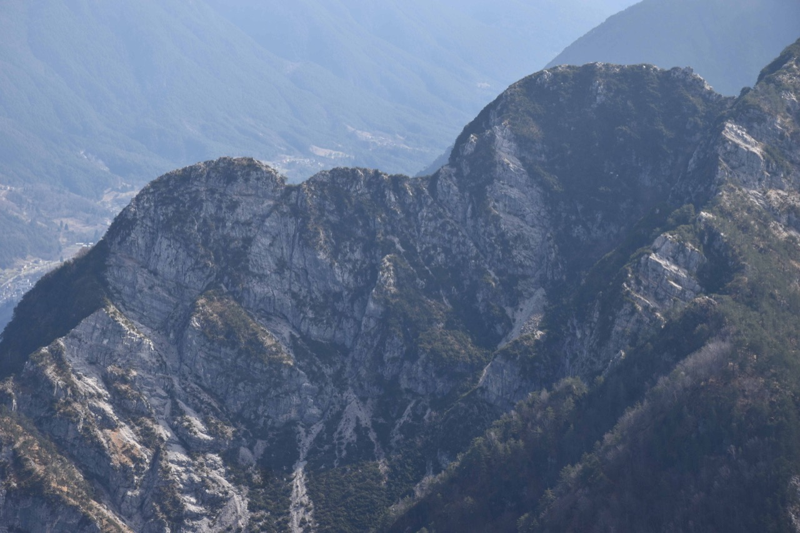Iniziamo a scendere per la panoramicissima cresta Nord.
Dalla sella q1339 scendiamo di 100m e raggiungiamo il percorso citato all'inizio della pagina, ritrovando i tagli fatti a suo tempo. Scendiamo al "forcellino" e saliamo sulla q1161, da cui osserviamo la Punta Salvotis, la q1345 e il bosco da cui siamo passati.
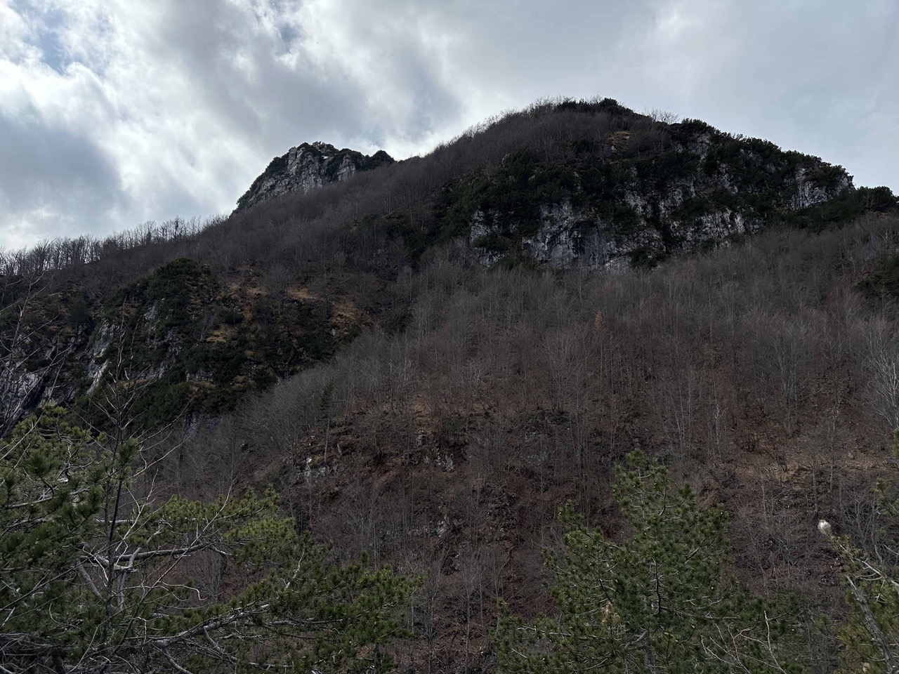 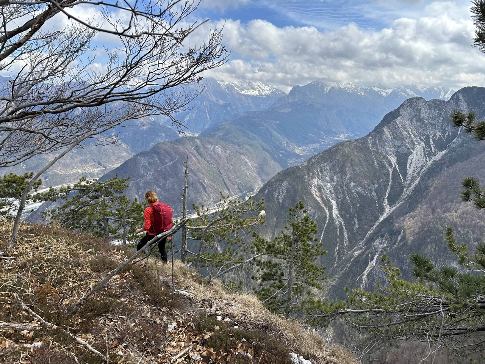Scendiamo per la ripida costa che permette di traversare fino alla forcella a Sud del Uarchèc. La relazione di Trois Neris mette in guardia su questo pezzo, dando l'idea che si tratti di una parte molto difficile: non sono per niente d'accordo, è sì ripido, ma non c'è nessuna difficoltà o esposizione!
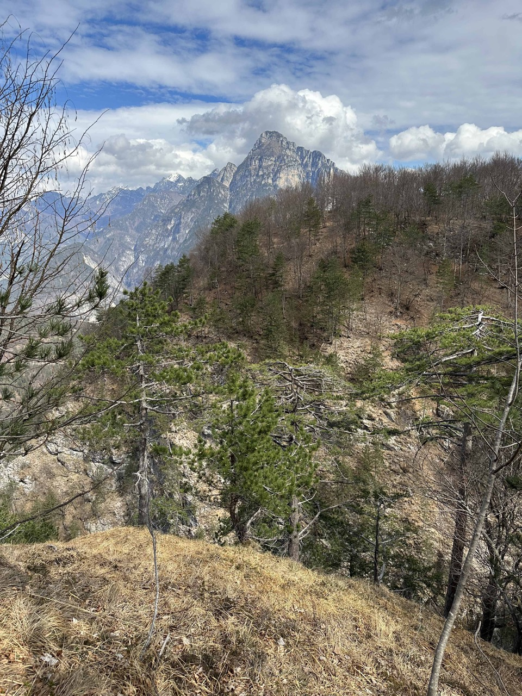Ultima immagine: le belle cime satelliti del Lávara.
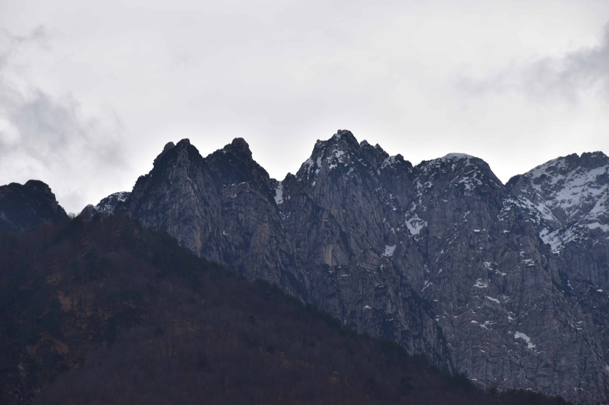